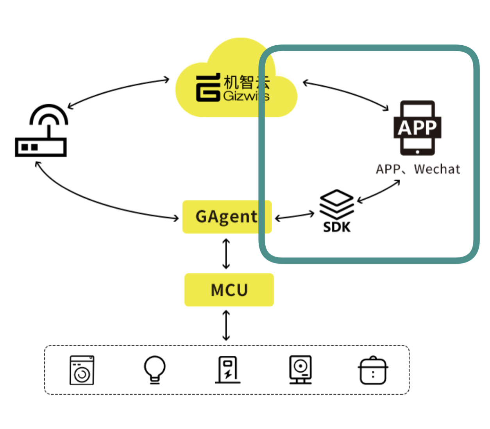
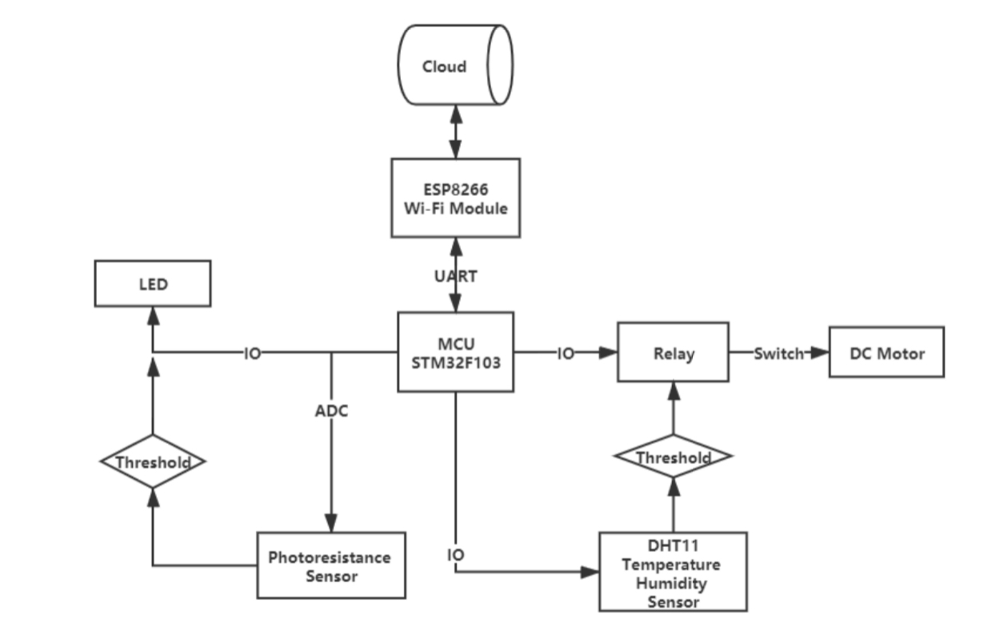
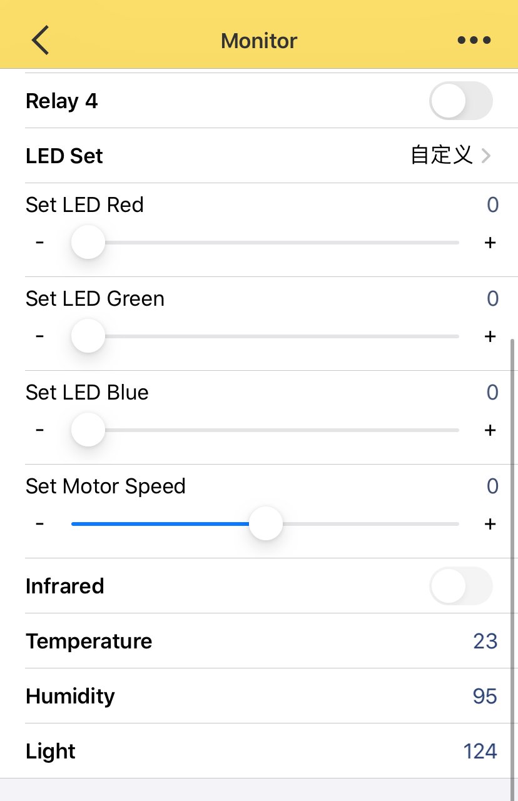
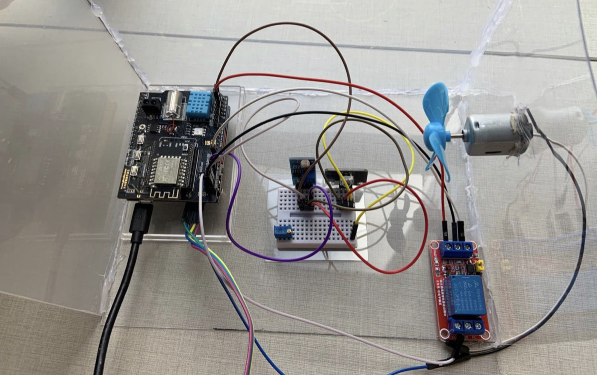

Back
Design and Implementation of Environmental Monitoring System Based on IoT
Bachelor's Graduation Thesis< 2019 - 2020
With the development of information technology, computer rooms are blossoming or have been built in campuses for studying but still lack of efficient management. To solve the problems of high cost, insufficient networking and the single measurement of environmental factors in the existing computer room control system, An automatic and remote management system for computer rooms is designed based on the single-chip microcontroller with multiple sensors and modules, and an Android application is developed to control the devices. The system realizes remote monitoring and control of environmental variables such as temperature, humidity, and lighting with multiple trigger factors.

The hardware design of the system includes an STM32 controller, sensing modules, equipment control modules, and the network module. DHT11 and YH-LDR sensors are used in the data acquisition to measure the environmental factors, and the equipment control module controls the cooling system and other executive equipment through the control relay. And STM32 is connected to the network through the ESP8266 Wi-Fi module for remote control. An IoT cloud server is used as the backend system for information processing and history data review.

After testing, the designed control system for this paper is able to realize the remote real-time monitoring of the air temperature, air humidity and light intensity in the machine room, and can automatically control the relevant factors within the required range. Compared to the existed computer room management method, this system has advantages in convenience accuracy, and low-cost.

